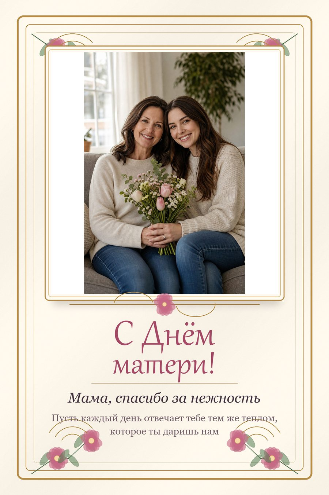

Промтзилла
Как создать открытку «С Днём матери» по своему фото через нейросеть
Загрузи фото мамы, семейное фото или нежный портрет — GPT Image 2 или Nano Banana PRO поможет создать открытку ко Дню матери.
Пошаговая инструкция
- 1Выбери фото мамы, семейный портрет или тёплый кадр, где лица хорошо видны.
- 2Подготовь текст: главную надпись, обращение к маме и короткое пожелание.
- 3Открой GPT Image 2 или Nano Banana PRO, загрузи фото и вставь RU-промт ниже.
- 4Попроси сохранить лица, позы, свет и настроение, а цветы и декор разместить вокруг кадра.
- 5Если текст получился криво, попроси перерисовать только надпись и не менять фото.
- 6Проверь орфографию, читаемость и аккуратность открытки перед отправкой.
Пример: фото и открытка
ДоЗагружаем тёплое семейное фото для открытки ко Дню матери.

ПослеИИ оформляет фото как витиеватую рисованную открытку с цветами, рамкой, завитками и каллиграфической надписью.
Промт
RU
Загружаю своё фото. Нужно создать витиеватую рисованную открытку «С Днём матери» на основе этого фото.
Текст на открытке:
— Главная надпись: {{ГЛАВНАЯ_НАДПИСЬ_НАПРИМЕР_С_ДНЁМ_МАТЕРИ}}
— Обращение: {{ОБРАЩЕНИЕ_НАПРИМЕР_МАМА}}
— Короткое пожелание: {{КОРОТКОЕ_ПОЖЕЛАНИЕ}}
Стиль открытки: {{СТИЛЬ_НАПРИМЕР_ВИТИЕВАТАЯ_РИСОВАННАЯ_АКВАРЕЛЬНАЯ_ЦВЕТОЧНАЯ_ОТКРЫТКА}}.
Требования:
— Используй загруженное фото как главный элемент открытки
— Сохрани лица, позы, пропорции, свет и настроение исходного фото
— Сделай дизайн более рисованным и авторским: акварельные цветочные иллюстрации, тонкие ботанические веточки, декоративные завитки, лёгкая виньетка
— Добавь изящную рамку или орнамент по краям, но не перекрывай лица и важные части фото
— Главная надпись должна быть красивым каллиграфическим шрифтом; дополнительный текст — аккуратным читаемым serif/script-шрифтом
— Не делай плоский шаблон в стиле Canva, баннер или обычную соцсетевую картинку
— Текст должен быть написан без ошибок, ровно, крупно и читаемо
— Не добавляй лишние логотипы, водяные знаки, случайные надписи и лишние рамки
— Результат должен выглядеть как готовая праздничная открытка для отправки или печати
EN
I'm uploading my own photo. Create an ornate hand-drawn Mother's Day greeting card based on this photo.
Card text:
- Main headline: {{MAIN_TEXT_FOR_EXAMPLE_HAPPY_MOTHERS_DAY}}
- Addressing line: {{ADDRESSING_LINE_FOR_EXAMPLE_MOM}}
- Short wish: {{SHORT_GREETING}}
Card style: {{STYLE_FOR_EXAMPLE_ORNATE_HAND_DRAWN_WATERCOLOR_FLORAL_CARD}}.
Requirements:
- Use the uploaded photo as the main visual element of the card
- Preserve faces, poses, proportions, lighting and mood of the original photo
- Make the design more illustrated and crafted: watercolor botanical flowers, delicate branches, decorative swirls and a soft vignette
- Add an elegant frame or ornamental border around the composition, without covering faces or important photo details
- Use a beautiful calligraphic headline and refined readable serif/script typography for the smaller text
- Do not make it look like a flat Canva template, banner or generic social media card
- The text must be correctly written, aligned and large enough to read
- Do not add extra logos, watermarks, random captions or unnecessary frames
- The result should look like a finished festive card for sending or printing
Теги
Эту страницу можно использовать онлайн: промпт подходит для работы с ИИ и нейросетью.